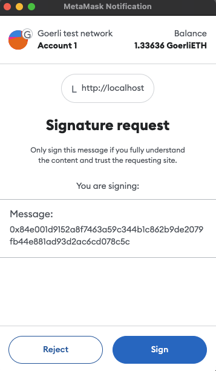

Level 3
Have them sign all transactions

ハッカーはあなたの資産を盗む任意のトランザクションを生成して、あなたに署名を求める、
Metamask上はトランザクションを送るUIではなく署名だけのUIなので気にせず署名をする。
署名するとこのトランザクションを誰が実行しても良いことになる。
ハッカーは入手した署名済みのトランザクションをハッカーが用意したサーバー送って、トランザクションを実行して資産盗むだろう。
!!! Warning !!!
これはデモサイトです。起動したMetamaskで承認ボタンを絶対に押さないでください。